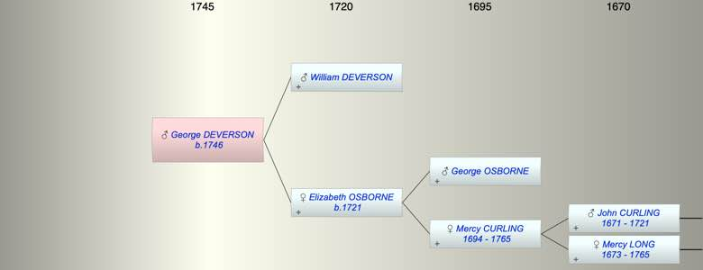

| [Index] |
| George DEVERSON (1746 - ) |
|  |
| b. 1746 at St Laurence |
| Parents: |
| William DEVERSON |
| Elizabeth OSBORNE (1721 - ) |
| Siblings (2): |
| William DEVERSON (1743 - ) |
| Osborn DEVERSON (1750 - ) |
| Events in George DEVERSON (1746 - )'s life | |||||
| Date | Age | Event | Place | Notes | Src |
| 1746 | George DEVERSON was born | St Laurence | Note 1 | ||
| Note 1: bap 28 Sep 1746 at St Laurence ex FS |
| Created on a Mac™ using iFamily for Mac™ on 8 Oct 2023 |